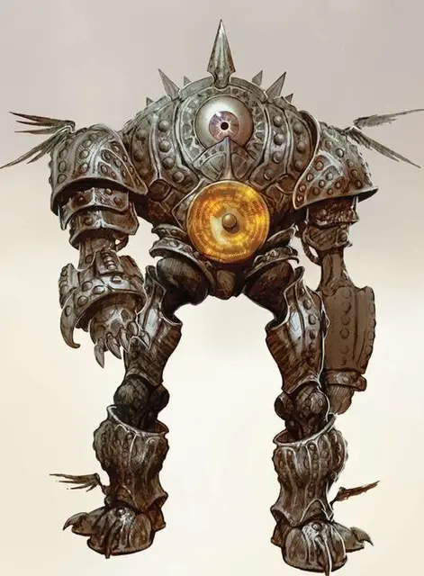

Марут
Marut
Большой Конструкт (Неизбежный), законно-нейтральный

Класс Доспеха 22 (Природный доспех)
Хиты 432 (32к10 + 256)
Скорость 40 футов, летая 30 футов (парит)
| мод | спас | ||
|---|---|---|---|
| СИЛ | 28 | +9 | +9 |
| ЛОВ | 12 | +1 | +1 |
| ТЕЛ | 26 | +8 | +8 |
| мод | спас | ||
|---|---|---|---|
| ИНТ | 19 | +4 | +12 |
| МДР | 15 | +2 | +10 |
| ХАР | 18 | +4 | +12 |
Навыки Восприятие +10, Запугивание +12, Проницательность +10
Сопротивление урону звук; дробящий, колющий, рубящий от немагических атак
Иммунитет к урону яд
Иммунитет к состояниям отравление, паралич, очарование, испуг, бессознательность
Чувства тёмное зрение 60 футов, пассивное Восприятие 20
Языки Все, но говорит редко
Опасность 25 (75000 опыта)
Бонус мастерства +8
Особенности
Неизменяемая форма. Марут невосприимчив к любым заклинаниям, изменяющим его форму.
Врождённое колдовство. . Базовой характеристикой марута является Интеллект (Сл спасброска от заклинания 20). Он может накладывать следующие заклинания, не нуждаясь в материальных компонентах:
• Неограниченно: уход в иной мир [plane shift] (только на себя)
Легендарное сопротивление (3/день). . Если марут проваливает спасбросок, он может вместо этого сделать спасбросок успешным.
Сопротивление магии. . Марут совершает с преимуществом спасброски от заклинаний и прочих магических эффектов.
Действия
Мультиатака. Марут совершает две атаки точным ударом.
Точный удар. . Рукопашная атака оружием: автоматическое попадание, досягаемость 5 футов, одна цель. Попадание: 60 урона силовым полем, и цель отбрасывается на расстояние до 5 футов от марута, если оно Огромное или меньше.
Опаляющий указ (перезарядка 5-6). . Магическая энергия исходит из груди марута в виде куба с габаритами в 60 футов Все существа в зоне действия получают 45 урона излучением. Все существа, получившие этот урон, должны преуспеть в спасброске Мудрости Сл 20 или стать ошеломлёнными до конца следующего хода марута.
Время суда. . Марут выбирает до двух целей, которых он способен видеть. Каждая цель должна преуспеть в спасброске Харизмы Сл 20, иначе они будут телепортированными в телепортационный круг в Зале Соглашений в Сигиле. Цель автоматически проваливает спасбросок, если она недееспособна. Если цели телепортированы, то вместе с ними телепортируется и Марут.
После перемещения марут не может использовать эту способность до окончания короткого или продолжительного отдыха.
Описание
Почти неостановимые сущности, которые служат лишь одной цели: они обеспечивают соблюдение договора в Зале Соглашений [Hall of Concordance] в городе Сигил. Праймус, лидер модронов, создал марутов и прочих существ, чтобы они обеспечивали порядок сделок между планарными жителями. Многие существа, включая юголотов, заключают контракт с марутами, если так потребуется.
Космические исполнители порядка. Зал Соглашений является пристанищем чистого закона Сигила, Города Дверей. В зале две стороны взаимно соглашаются с определёнными условиями и те, кто платит необходимую дань Коляруту, механической машине абсолютного правоведения, могут высечь свой контракт на золотом листе, что расположен на груди марута. С этого момента, пока сделка не выполнится, марут обязан следить за условиями сделки и наказывать любого из каждых сторон, кто попытается разорвать контракт. Марут использует летальные приёмы, только если этого потребует контракт, когда контракт полностью разорван, либо, когда на марута нападут.
Слово – закон. Маруты безразличны к сути соглашения, они заботятся только о его содержании. Марут соблюдает только те условия, что были написаны в соглашении. Колярут отклоняет контракты, в которых содержатся расплывчатые, противоречивые, или неосуществимые условия. Помимо этого, его не волнует, что написано и о чём договорились стороны. Снаружи Зала Соглашений ждёт небольшая армия адвокатов, жаждущие продать свой опыт в мастерстве написания и проведения сделок.
Природа конструкта. Марут не нуждается в воздухе, пище, воде или сне.